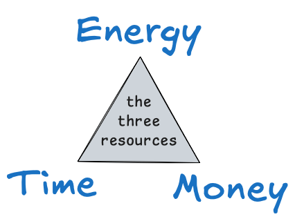
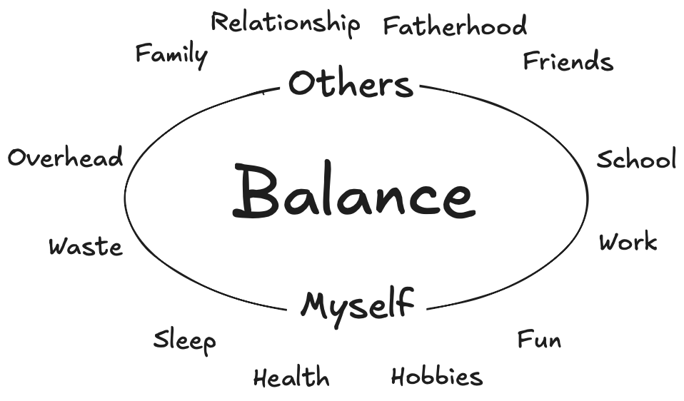
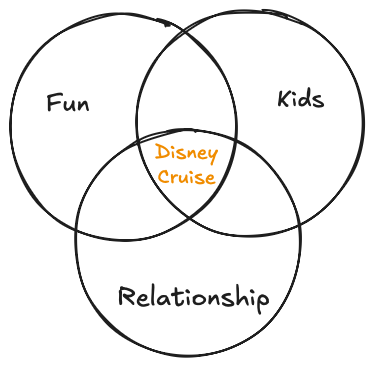
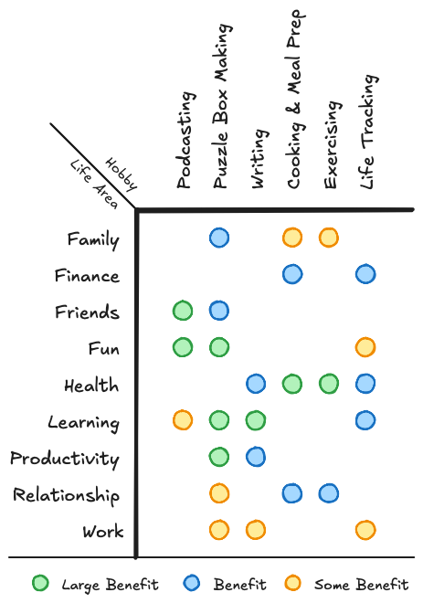
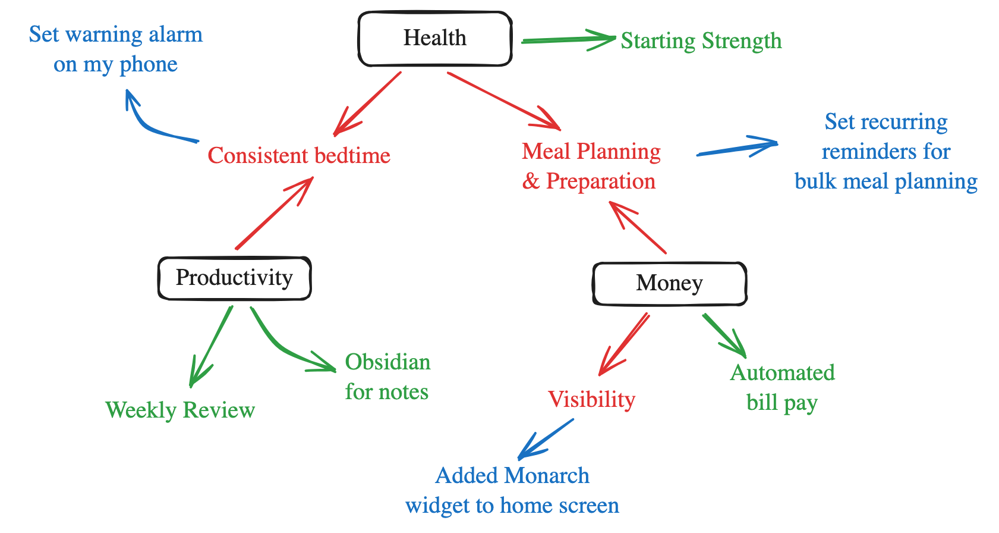
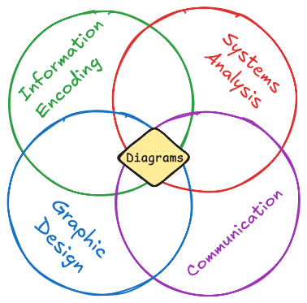
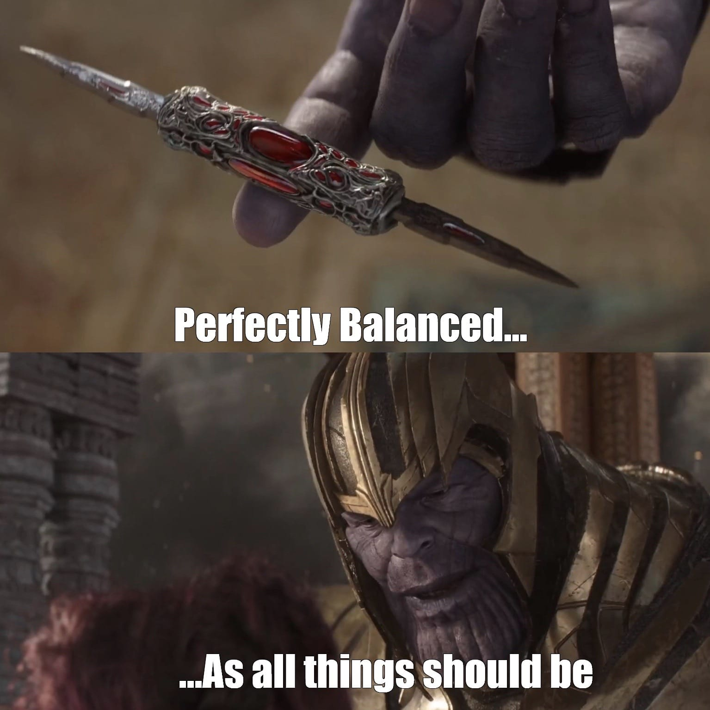

I don’t have an overarching “philosophy of life” - but if I did, it would with start with a dissection of balance.
Balance
Balance is a topic that never fully leaves my mind. If I’m too focused on one area or aspect of life, others start to consume my subconscious - manifesting in anxiety, missed commitments, and general malcontent. This is why the concept of balance shows up in the Column a lot. See: 3 columns ago where I addressed life areas. It’s a concept I try to get right.
Top Level - Three Resources
The typical triad of personal resources are time, energy, and money.1

These are the things you have a finite allotment of that you spend each time you do anything. You allocate these resources every time you do anything. The book “Your Money or Your Life” wrapped up all of these concepts into one term: “life energy”.
While you can sometimes spend one resource to “buy back” the other two, you’re always spending something. The utilization of these three resources to maximize satisfaction with your life is what I call personal economics. That’s the topic for today.
Commitment Inventory
Enter the concept of the commitment inventory.
A commitment inventory is an analysis of the things you commit resources to in your life and the amount of resources they’re receiving. The goal of a commitment inventory is to see what areas of your life are receiving too much (or too little) attention. This makes you more mindful of how you allocate resources and gives you the opportunity to be intentional about balancing what you do.
My Inventory
This is roughly how I visualize the areas of my life for which resources are spent.

These areas fall into 3 broad categories:
- Myself - things I do for me
- Sleep
- Health - encompassing diet & exercise
- Hobbies - projects, learning, etc
- Fun - stuff done for the heck of it
- Others - things I do for others
- Relationship - Borat
- Fatherhood - resources for the benefit of my kids
- Family - mom, dad, siblings, niblings, in-laws
- Friends - people I choose to associate with for fun
- Everything else - including good things (e.g. my job) and bad ones (e.g. wasted resources)
- School - my Master’s degree
- Work
- Overhead - resources spent in simply “setting up” or “maintaining” things
- e.g. my commute is overhead - it’s “for” my work, but work doesn’t really benefit from the actual drive so much as me being there
- Waste - resources simply wasted, not in service of some “greater good”
In case this doesn’t go without saying - I’d like to spend zero resources on waste & overhead.
Re-balancing
Reprioritizing
The most straightforward way to re-balance your energy spend: rob from Peter to pay Paul. If you spend too much time on hobbies and not enough time on sleeping, spend less time on hobbies and more time sleeping.
Avoiding Sinks, Pits, and Sucks
For some reason we’ve chosen as English speakers to refer to things that drain your resources using three separate words:
- time-sinks
- money-pits
- energy-sucks
These are things that require an inordinate amount of resources for the value they return. Sometimes these things are obvious. Other times they are not.
The Sandwich Maker Example
We once bought a fancy breakfast sandwich maker. It made making breakfast sandwiches fast and easy.
But.
You had to get it out.
You had to set it up. You had to clean it.
You had to store it.
It cost money to get in the first place.
And perhaps most damning of all - it just isn’t that hard to make a breakfast sandwich without specialized equipment.That sandwich maker made making breakfast sandwiches fast and easy - but its net effect was making life slower & harder.
We got rid of the sandwich maker. I’ve kept the lesson. The empty space in the cabinet is more valuable than what we’d filled it with.
Perhaps a more relatable example: social media & your phone. These things drain us of immense amounts of time and energy. What they give us in return is a false sense of “being engaged”. Not having social media on your phone is a great way to avoid diverting a huge chunk of resource off to that “waste” bucket.
Cross-Area Activities
Pointing out the obvious - many activities, like the Disney Cruise we just took, are multi-beneficial.

Look at things you do that are good for multiple areas of your life simultaneously. Make sure your resource allocation for those things is properly weighted for the good they do across all the areas they touch. Ideate new ways to hit multiple areas of your life at once. Consider whether you can manufacture ways to spend $1 (metaphorically or literally) to benefit several things you care about. Consider which of your discretionary actions are the most broadly beneficial and lean into them:

Planning & Environment-Tailoring
You can do things now to set up better allocation of your resources in the future.
To help with this & align it with life areas, you can use a what’s working, what need’s attention, and what you’re doing about it diagram.

Creating a diagram like this is an exercise in intentional planning and tailoring of the environment to make up for aspects of your areas of your life that have been troubling you.
My Re-balancing
I’m not going to share all my re-balancing goals here, but I will share that two areas that were the most in need of additional love & attention were fun and friends. Thankfully those two things go hand-in-hand.
Tldr
I want to spend more time, energy, and money in service of fun and friendship
Other Topics
Diagrams
I’ve really come to embrace my love of diagrams. They are at the intersection of many things I like and think I’m okay at.

A picture is worth 1000 words.
I got really jazzed about the idea of writing a book about diagrams. That desire has passed for the most part, but never say never.
Meta
I write Columns less often. Much of what I used to write about here has shifted to my notes. I’m still evolving my thinking on how this blog and my notes relate to one-another. If I’m writing about it here, it’s because it’s been on my mind. If it’s been on my mind, chances are I’ve written some notes about it. You should expect to continue seeing me link to my own notes within these Columns. I’ll try not to be too tedious about it.
Speaking of tedious: my next Column will be yet another deep dive on my Life Tracker/Personal Data Warehouse/Data Journal as I celebrate 12 full years tracked.
Top 5: Fairy Hair Puns
Melissa got some fairy hair recently. I made a series of fairy hair related puns before she got it. These were five of them.
5. Does it cost a lot to get fairy hair, or is the price very fair?
4. Will you be getting a lot of fairy hair, or will it be barely there?
3. I haven’t not seen anyone with fairy hair, would you say it’s fairly rare?
2. Could you put fairy hair on a scary bear?
1. Are you getting fairy hair up there-y there or on your dairyaire?
Quote:
I need to say something witty to also be your quote - Danielle, after her conversation with me inspired this Column

- Thanos
Footnotes
-
These are the foundation of the old observation about how kids have time and energy, but no money, adults have energy and money, but no time, and the elderly have time and money, but no energy. ↩